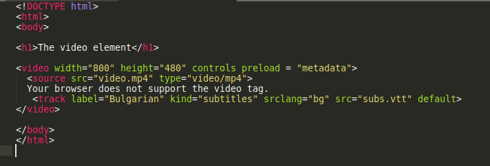

Реферат по Web технологии на тема WebVTT
Kакво е WebVtt?
WebVTT (Web Video Tracks) e текстови файлов формат използван за съхранение на надписи или субтитри които могат да бъдат доабявни към video елементи в HTML. Тези надписи могат да бъдат добавени към видео или аудио в HTML документ чрез <track> елемента.
За какво се използва WebVTT?
Основните неща за които се използва са:
- Добавяне на субтритри към видео на чужд език.
- Добавяне на надписи за хора с увреден слух.
- Добавяне на пояснителни надписи към видео.
Структура на WebVTT файл
WebVtt файловете са текстови( за разлика от двоични) файлове с разширение .vtt. Те спазвт следната структура- Незадължителен byte order mark (BOM).
-
WEBVTT - Незадължителен "хедър" след
WEBVTT.- Между
WEBVTTи хедъра задължително има поне един празен символ - Хедърът може да служи като заглавие на файла.
- Хедърът може да съдържа прозиволен текст с изключение на нов ред или "
-->"
- Между
- След това има поне 2 празни реда
- Нула или повече надписи или коментари
- Нула или повече празни редове
Примерен WebVTT файл
Ето един прост примерен .vtt файл (subs.vtt):
WEBVTT "Rick and Morty Love quote"
00:00.000 --> 00:05.000
- Слушай Морти, жал ми е да го кажа, но това което наричаш "любов" е просто химична реакция, която подтиква животните към размножаване.
00:06.000 --> 00:11.000
- Удря те силно, Морти, после бавно избледнява, а ти ставаш пленник на разпадащ се брак.
00:12.000 --> 00:17.000
- Аз минах по този път. Родителите ти също. Не прави тази грешка, Морти. Извисе се. Фокусирай се над науката.
Да разгледаме примерния файл файла по-детайлно. Във него имаме 3 надписа. За всеки от тях:
- Всеки надпис от файла започва със някакво време. Той посочва времето в което да надписа ще бъде показан спрямо дължината на видеото.
- След времето следва низа "-->". Във WebVTT той служи за разделяне на времеви интервал.
- След низа "-->" отново следва време. То указва края на показването на съответния надпис.
- След това следва текста на надписа който ще бъде показан. За първия надпис това е "Слушай Морти, жал ми е да го кажа, но това което наричаш "любов" е просто химична реакция, която подтиква животните към размножаване."
Използване на WebVTT файл във HTML документ
WebVTT файл може да бъде добавен към HTML документ посредством елемента <track>. Елемента <track> е поделемент на елемента <video>.

Резултатът от примерния код в картинката може да се види в следнoто GIF: